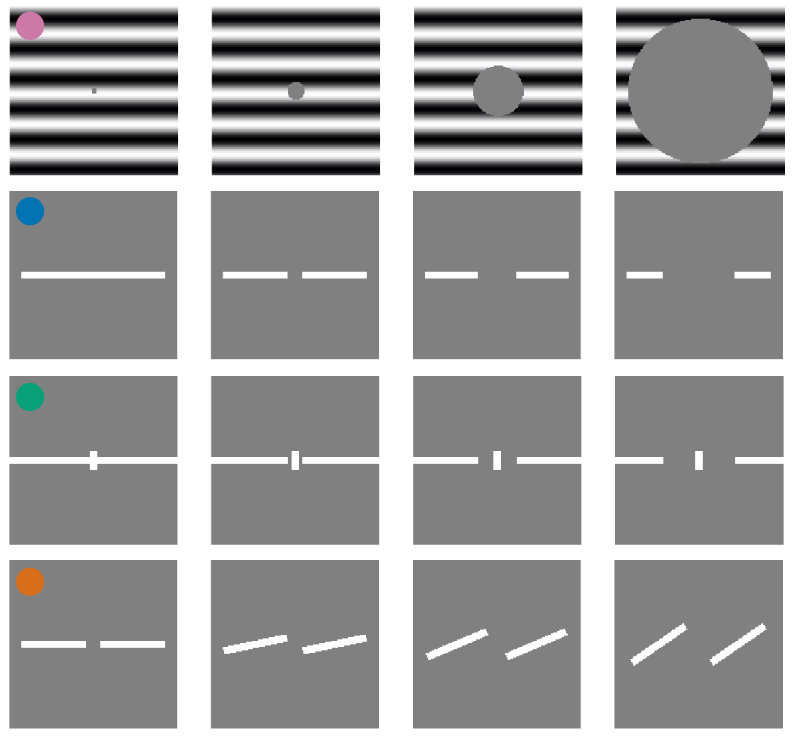
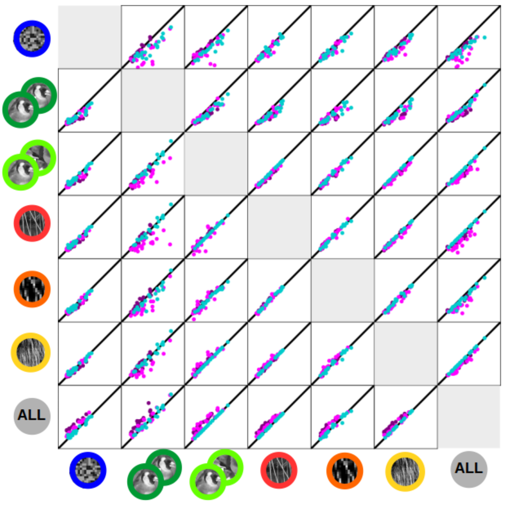

| Facets of illusory contour sensitivity in early visual system. | |
|  |
Sensitivity to illusory contours is a key signature of higher-level visual processing, and increasing number of neurons sensitive to illusory contours along the ventral visual pathway has been identified in experiments. In this project we will utilize our detailed models of cat V1 (and later V2) to study how such sensitivity to illusory contours emerges along the visual hierarchy, and how is it implemented in the neural substrate. |
| Model of V2 processing and beyond. | |
 |
Having successfully created a comprehensive model of V1 (see below), we are now expanding our modelling efforts beyond the primary visual cortical area, focusingparticularly on area V2 and in future also V4. Upon construction of the expanded model we will focus on probing the model for presence of sensitivity to higher-order correlations in the visual stimuli, sensitivity to illusory contours and presence of figure-ground segregation signals. |
| Cortical visual prosthesis: a detailed large-scale cortical simulation study. | |
 |
Recent advances in optogenetics are opening path towards development of light stimulation based cortical prosthetic devices. However, two fundamental aspects of the cortical optogenetic prosthesis remain unclear. First, the exact behavior of cortical physiology under direct stimulation, especially in the context of active and functionally specific neural circuitry, is poorly understood. Second, we lack strategies for transformation of visual stimuli into light patterns that induce cortical activity similar to that due to stimulation via retina. We address these issues using a large-scale spiking neural network modeling strategy of high biological fidelity. We examine the relationship between configuration of light delivered to cortex and the resulting spatio-temporal pattern of activity evoked in the simulated cortex. We design a protocol for translation of visual stimuli to activation patterns of LED array and provide a assessment of the resulting cortical activations with respect to the natural vision condition. |
| A reassessment of stimulus dependence of receptive fields in primary visual cortex | |
|  |
This is the PhD project of Margot Larroche that I supervise together with Cyril Monier. Estimation of RF model based on an ensemble of visual stimuli and associated neural responses is a common approach for studying neuronal coding in V1. The interpretability of such models has, however, been regularly challenged due to the stimulus dependence of their fits, i.e. their failure to generalize between different stimulus statistics. However, the compared stimulus sets were often insufficiently controlled for a number of basic parameters, putting in question their interpretation. In this project, we use a carefully designed set of visual stimuli to characterize short-term RF stimulus-dependence phenomena using dense multi-electrode extracellular recordings of neuronal responses in cat V1. We estimate RF models including novel multi-stage L-NL cascade architecture for each stimulus type, compute cross-prediction performances, and analyze differences between fits. |
| Arkheia: data management and communication for open computational neuroscience | |
|
The multi-faceted development in computational neuroscience towards more integrative approaches and more intense communication poses major new challenges for modelers, as currently there is a lack of tools that help with automatic communication of all aspects of a simulation workflow to the rest of the community. To address this important gap, we introduce Arkheia. Arkheia is a web-based open science platform for computational models in systems neuroscience. It provides an interactive, graphical presentation of simulation results, experimental protocols, and interactive exploration of parameter searches, in a web browser-based application. Arkheia is focused on automatic presentation of these resources with minimal manual input from user. It is designed in an open manner, with a clearly defined and separated API for database access, so that any project can translate its data into the Arkheia database format. Download Arkheia on GitHub, or read about it here. |
|
| Model of thalamo-cortical loop of cat visual system. | |
|
This is the PhD project of Domenico Guarino. What are the functional properties of the thalamo-cortical loop? In the early visual system of the cat, the feedforward pathway going from the lateral geniculate nucleus (LGN) to the primary visual cortex (V1) is well characterized both anatomically and functionally. But, in spite of the amount of experimental work, there is still poor agreement on possible roles for the feedback pathway going from V1 to LGN. We addressed this issue dividing the available experimental data into open-loop conditions, where the thalamus was probed in isolation from cortex, and closed-loop conditions, where the intact system was probed. We explored these same conditions with a biologically plausible integrative large-scale model of the cat early visual system that includes: LGN, peri-geniculate nucleus (PGN), and V1. |
|
| Comprehensive model of cat primary visual cortex. | |
|
Neuroscience has produced an immense amount of data on the function and anatomy of early visual areas. However, the transformation of this knowledge into a general coherent understanding has so far been limited. Computational modeling can integrate such fragmented data by building models of brain structures that satisfy the broad range of constraints imposed by experiments, thus advancing our understanding of their computational role, and their implementation in the neural substrate. In this project we aim to build a comprehensive multi-scale spiking model of cat primary visual cortex which satisfies a unprecedented range of experimentally identified anatomical, statistical and functional properties. In future we will expand the scope of the model beyond primary visual cortex. |
|
| Mozaik: integrated workflow for neural simulations. | |
|
Computational neurosceince is shifting towards more heterogeneous models of neuronal circuits, and employment of complex experimental protocols. This increase of complexity is not sufficiently addressed by existing tool chains. Mozaik is a workflow system for spiking neuronal network simulations written in Python that integrates model, experiment and stimulation specification, simulation execution, data storage, data analysis and visualization into a single automated workflow. This way Mozaik increases the productivity of running virtual experiments on complex neuronal networks. Download Mozaik on GitiHub or read about it here. |
|
| Receptive fields identification in local populations of V1 neurons. | |
|
One of the key goals of sensory neuroscience is to identify the relationship between stimuli and neural responses. A common approch of identifying the stimulus-response function is to present a large collection of stimuli while responses of sensory neurons are recorded. Numerous methods for estimating the stimulus-response function from such data has been proposed in the past but no took advantage of the known architecture of primary visual cortex (V1) and the fact that a local population of V1 neurons shares limited pool of thalamic inputs. In this project we investigate a novel method for estimating the stimulus-response function in a population of neurons that implicitly assumes the discussed architecture of V1. |